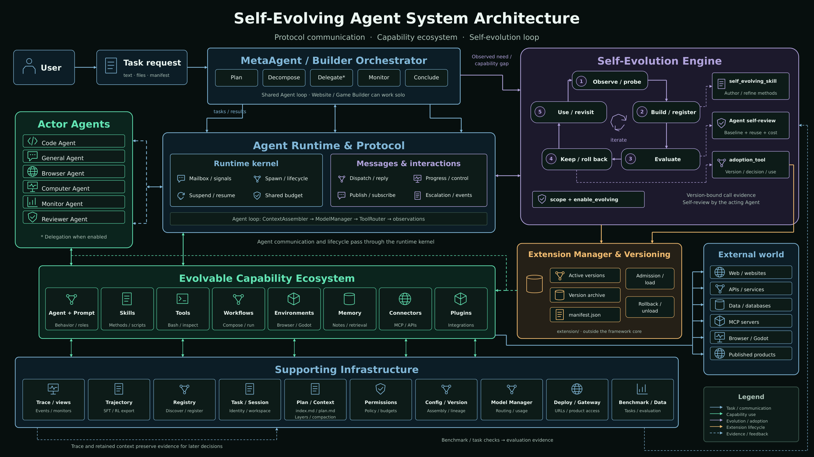

A MetaAgent orchestrates specialized sub-agents to solve tasks — while generator, evaluator, and optimizer agents continuously grow the tool, skill, and agent ecosystem.
A clean, registry-driven core where every capability is a hot-pluggable component, and dedicated agents grow that ecosystem over time.
A closed loop — detect gap → generate → evaluate → adopt or roll back — runs while serving your task, strictly separated from the user work itself. Every version is archived; any of them restores with one call.
Prompts, workflows, task documents, memory reports and per-step snapshots are complete HTML documents — executable by the runtime and browsable, diffable, reviewable by a human.
Task containers get no network interface — only loopback. The single route out is a host-side relay over a Unix socket, so egress policy lives where the sandboxed process cannot edit it.
Step, token and wall-time limits aren't just kill-switches: the remaining budget is rendered into the prompt every step as NORMAL / TIGHT / CRITICAL, so the agent plans around it instead of being cut off.
Chat, a visual flow canvas, real VS Code in the browser, and a Science workstation with a live Jupyter kernel — all editing the same workspace, over one WebSocket protocol.
Every path the framework writes is declared in a single enum-keyed table. Two writable roots, and only two — a rule enforced by a test, not by convention.
The MetaAgent plans and dispatches work over the Agent Bus to specialist sub-agents that run in parallel and return results for evaluation.

Runtime is how messages move; protocol is what a conversation means. Spawning an agent wraps it in a handle with its own inbox and a pump that drains it — which is what makes a running agent something you can talk to, pause, and pick back up.
spawnWrap a live agent in a ref: inbox, pump task, status, pending reply.sendFire-and-forget a message into the inbox.ask · invokeRun it and await a typed Response.suspend · resumePark a coroutine on a key; anyone elsewhere can wake it by that key.publish · subscribeFan a message out to every running subscriber of a topic.stop · cancel · pauseGraceful stop drains first; control messages reach a mid-flight agent.Escalation is the clearest use of suspend/resume: a blocked sub-agent asks its parent and parks itself, costing nothing while it waits, and carries on the moment an answer arrives.
EscalationMessage to its parent — reason, situation, and what it suggests doing.task_id. The coroutine holds no loop and burns no budget while it waits.reply(task_id, guidance) resolves that future, and tells the caller whether anyone was actually still waiting.One detail that had to be got right: a caller's timeout on ask must not cancel the future the agent owns. Cancelling the shared future would turn a normal late completion into an InvalidStateError and take the long-lived pump down with it — so the wait is shielded, and a slow answer is merely late, not fatal.
For every kind of component, three agents form a closed improvement loop — new capabilities are born, judged, and refined without touching the immutable core.
extension/; an optimizer rewrites an existing evolvable one in place. Both take the target by name.Absence of visible defects is not evidence the work is good — usually it means nobody looked. Until a check has run and failed, the right move is to go get the signal, never to evolve.
The task needs an operation no tool, skill or connector provides, and retrying with the existing ones cannot work. "The agent didn't think to do it" does not count.
The same agent fails the same way twice or more despite corrective guidance. One dispatch can never satisfy this — re-dispatch with explicit guidance first and see if it returns.
Output is systematically below bar on a dimension you have actually measured, because no method exists to do better. If you cannot name the measurement, you have signal-gathering to do.
enable_evolving blocks it at registration; generate an extension/ capability instead.Hand-written built-ins live in agentevolver/ and are frozen — an optimizer that targets one is blocked at registration. Evolved components live in an external extension/ tree, loaded and versioned by the ExtensionManager, so the system can grow safely and roll back to any archived version.
Prompts, workflows, task documents and step snapshots are complete HTML documents — executed by the runtime and rendered in a browser from the same bytes. There is no "export to HTML" step that can drift.
prompt/default/<agent>.html — run by prompt_manager, styled by prompt.cssworkflow/default/<name>.html — compiled by WorkflowCompiler into the runtimeexamples/tasks/*.html — loaded by task/loader.pyFileSystemMemory — a JSON twin backs the runtime, the HTML is for you<log_root>/messages/<agent>/NNNN.html — every step, in the same stylesheet as the promptEvery callable manager implements the same get_schema() — json returns the exact function-calling object sent to the model, md returns a human-readable contract. The prompt carries only a compact roster; full schemas travel in the request.
Reasoning + execution loop: 8 actors, 7 generators, 7 evaluators, 7 optimizers.
One atomic operation — bash, file r/w/edit, git, grep, web fetch, code interpreter, deploy.
Filesystem-backed SOPs (SKILL.md + scripts) across 11 categories.
An external MCP server, each action projected as its own function.
Stateful worlds with @action methods — browser, Linux desktop, SSH, artifact renderer.
An executable HTML multi-agent program, compiled and run on the shared runtime.
Pluggable per-session memory, tiered — and itself evolvable.
One outside service each (OpenAI, Tavily, Chroma, Composio…), exposing 332 datasource tools.
RAG over named corpora (bm25, tfidf…) and pure record/text transforms.
Each self-registers with an mmengine registry — discoverable, swappable, evolvable:
A React workbench talks to the Python Gateway over a WebSocket: four workspaces on one session, a live capability catalogue, and a desktop the agent can actually use.
A task sandbox usually needs some network — the agent's brain has to reach a model endpoint — while the work itself must not reach the open internet. A boolean flag cannot express that.
default_allow=False a forgotten host fails closed.*_API_BASE, never hardcoded.Three more layers sit around this one: six sandbox backends for isolation, a permission manager that classifies command intent before anything runs, and a write-ahead ledger that force-removes containers a dead run leaked.
Datasets are read locally first, then snapshot-downloaded from HuggingFace on demand.
Set up the environment, then let the MetaAgent run a task to completion.
# 1 · create the Python environment conda create -n agent python=3.12 conda activate agent pip install -e . # 2 · browser automation pip install playwright && playwright install pip install "browser-use[cli]"
# run the default task python examples/run_meta_agent.py # run an inline task python examples/run_meta_agent.py \ --task "Reverse a string + add unit tests" # run from a task document python examples/run_meta_agent.py \ --task-file examples/tasks/qsar_egfr_experiment.html
Full setup (Vault secret manager, Python env) is documented in scripts/INSTALL.md →